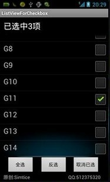

解决Android在listview中checkbox批量操作问题
在Android某些开发需求当中，有时候需要在listveiw中加入checkbox实现单选，多选操作。表面上看上去只是改变checkbox那么简单，然而实际开发中，实现起来并不是那么得心应手。尤其当listview比较多(比如屏幕最多只能显示10个item，但总共有12个item，也就是说listview的item数大于屏幕能够显示的item数)滑动屏幕的时候，由于适配器中getview()会重复使用被移除屏幕的item，所以会造成checkbox选择状态不正常的现象。自己在开发中碰到这样的问题很是苦恼，查了下资料，发现网上很少没有针对这类批量操作并没有一个完整的例子。搜了很多篇帖子才完美的实现这一常用的操作。所以在这里把这个Demo贴出来，供大家参考，希望能对大家有所帮助。
主界面的布局main.xml 这个就不多说什么
<?xml version="1.0" encoding="utf-8"?><LinearLayout xmlns:android="http://schemas.android.com/apk/res/android
android:layout_width="fill_parent
android:layout_height="wrap_content
android:orientation="vertical" >
<LinearLayout
android:layout_width="fill_parent
android:layout_height="wrap_content
android:orientation="vertical" >
<TextView
android:id="@+id/tv
android:layout_width="fill_parent
android:layout_height="50dip
android:layout_marginLeft="10dip
android:gravity="center_vertical
android:textColor="FCFCFC
android:textSize="11pt" />
<ListView
android:id="@+id/lv
android:layout_width="fill_parent
android:layout_height="381dip
android:cacheColorHint="00000000" >
</ListView>
</LinearLayout>
<RelativeLayout
android:layout_width="fill_parent
android:layout_height="53dip
android:orientation="horizontal" >
<Button
android:id="@+id/selectall
android:layout_width="80dip
android:layout_height="50dip
android:layout_marginLeft="20dip
android:gravity="center
android:text="全选" />
<Button
android:id="@+id/inverseselect
android:layout_width="80dip
android:layout_height="50dip
android:layout_marginLeft="118dip
android:gravity="center
android:text="反选" />
<Button
android:id="@+id/cancel
android:layout_width="80dip
android:layout_height="50dip
android:layout_marginLeft="213dip
android:gravity="center
android:text="取消已选" />
</RelativeLayout>
<LinearLayout
android:layout_width="fill_parent
android:layout_height="wrap_content
android:orientation="vertical" >
<TextView
android:layout_width="fill_parent
android:layout_height="100dip
android:layout_marginLeft="10dip
android:text="原创:" />
</LinearLayout>
</LinearLayout>
ListView每个item的布局,listviewitem.xml：
这里需要注意的是，由于checkbox的点击事件优先级比listview的高，所以要添加android:focusable="false"属性，使得checkbox初始的时候没有获取焦点。
另外这里是点击ListView的item控制checkbox的状态改变，也就是让item接收clik事件，所以需要加上android:focusableInTouchMode="false"这一属性。
<?xml version="1.0" encoding="utf-8"?><RelativeLayout xmlns:android="http://schemas.android.com/apk/res/android
android:layout_width="fill_parent
android:layout_height="55dip
android:layout_marginTop="20dip
android:orientation="horizontal" >
<TextView
android:id="@+id/item_tv
android:layout_width="267dip
android:layout_height="40dip
android:layout_marginLeft="10dip
android:gravity="center_vertical
android:textSize="10pt" />
<CheckBox
android:id="@+id/item_cb
android:layout_width="wrap_content
android:layout_height="wrap_content
android:layout_alignParentTop="true
android:layout_marginRight="5dip
android:layout_toRightOf="@id/item_tv
android:clickable="false
android:focusable="false
android:focusableInTouchMode="false" />
</RelativeLayout>
ViewHolder类
import android.widget.CheckBox;import android.widget.TextView;
public class ViewHolder {
public TextView tv = null;
public CheckBox cb = null;
}
为listview自定义适配器，该类为主Activity类MainActivity.java的内部类
public static class MyAdapter extends BaseAdapter { public static HashMap<Integer, Boolean> isSelected;
private Context context = null;
private LayoutInflater inflater = null;
private List<HashMap<String, Object>> list = null;
private String keyString[] = null;
private String itemString = null; // 记录每个item中textview的值
private int idValue[] = null;// id值
public MyAdapter(Context context, List<HashMap<String, Object>> list,
int resource) {
this.context = context;
this.list = list;
inflater = LayoutInflater.from(context);
init();
}
// 初始化 设置所有checkbox都为未选择
public void init() {
isSelected = new HashMap<Integer, Boolean>();
for (int i = 0; i < list.size(); i++) {
isSelected.put(i, false);
}
}
@Override
public int getCount() {
return list.size();
}
@Override
public Object getItem(int arg0) {
return list.get(arg0);
}
@Override
public long getItemId(int arg0) {
return 0;
}
@Override
public View getView(int position, View view, ViewGroup arg2) {
ViewHolder holder = null;
if (holder == null) {
holder = new ViewHolder();
if (view == null) {
view = inflater.inflate(R.layout.listviewitem, null);
}
holder.tv = (TextView) view.findViewById(R.id.item_tv);
holder.cb = (CheckBox) view.findViewById(R.id.item_cb);
view.setTag(holder);
} else {
holder = (ViewHolder) view.getTag();
}
if (map != null) {
holder.tv.setText(list.get(position));
}
holder.cb.setChecked(isSelected.get(position));
return view;
}
}
最后，最重要的就是MainActivity.java中一些事件响应的处理
public class MainActivity extends Activity { TextView tv = null;
ListView lv = null;
Button btn_selectAll = null;
Button btn_inverseSelect = null;
Button btn_calcel = null;
String name[] = { "G1", "G2", "G3", "G4", "G5", "G6", "G7", "G8", "G9",
"G10", "G11", "G12", "G13", "G14" };
ArrayList<String> listStr = null;
private List<HashMap<String, Object>> list = null;
private MyAdapter adapter;
@Override
public void onCreate(Bundle savedInstanceState) {
super.onCreate(savedInstanceState);
setContentView(R.layout.main);
tv = (TextView) this.findViewById(R.id.tv);
lv = (ListView) this.findViewById(R.id.lv);
btn_selectAll = (Button) this.findViewById(R.id.selectall);
btn_inverseSelect = (Button) this.findViewById(R.id.inverseselect);
btn_calcel = (Button) this.findViewById(R.id.cancel);
showCheckBoxListView();
// 全选
btn_selectAll.setOnClickListener(new OnClickListener() {
@Override
public void onClick(View arg0) {
listStr = new ArrayList<String>();
for (int i = 0; i < list.size(); i++) {
MyAdapter.isSelected.put(i, true);
listStr.add(name[i]);
}
adapter.notifyDataSetChanged();// 注意这一句必须加上，否则checkbox无法正常更新状态
tv.setText("已选中" + listStr.size() + "项");
}
});
// 反选
btn_inverseSelect.setOnClickListener(new OnClickListener() {
@Override
public void onClick(View v) {
for (int i = 0; i < list.size(); i++) {
if (MyAdapter.isSelected.get(i) == false) {
MyAdapter.isSelected.put(i, true);
listStr.add(name[i]);
} else {
MyAdapter.isSelected.put(i, false);
listStr.remove(name[i]);
}
}
adapter.notifyDataSetChanged();
tv.setText("已选中" + listStr.size() + "项");
}
});
// 取消已选
btn_calcel.setOnClickListener(new OnClickListener() {
@Override
public void onClick(View v) {
for (int i = 0; i < list.size(); i++) {
if (MyAdapter.isSelected.get(i) == true) {
MyAdapter.isSelected.put(i, false);
listStr.remove(name[i]);
}
}
adapter.notifyDataSetChanged();
tv.setText("已选中" + listStr.size() + "项");
}
});
}
// 显示带有checkbox的listview
public void showCheckBoxListView() {
list = new ArrayList<HashMap<String, Object>>();
for (int i = 0; i < name.length; i++) {
HashMap<String, Object> map = new HashMap<String, Object>();
map.put("item_tv", name[i]);
map.put("item_cb", false);
list.add(map);
adapter = new MyAdapter(this, list, R.layout.listviewitem,
new String[] { "item_tv", "item_cb" }, new int[] {
R.id.item_tv, R.id.item_cb });
lv.setAdapter(adapter);
listStr = new ArrayList<String>();
lv.setOnItemClickListener(new OnItemClickListener() {
@Override
public void onItemClick(AdapterView<?> arg0, View view,
int position, long arg3) {
ViewHolder holder = (ViewHolder) view.getTag();
// 在每次获取点击的item时改变checkbox的状态
holder.cb.toggle();
// 同时修改map的值保存状态
MyAdapter.isSelected.put(position, holder.cb.isChecked());
if (holder.cb.isChecked() == true) {
listStr.add(name[position]);
} else {
listStr.remove(name[position]);
}
tv.setText("已选中" + listStr.size() + "项");
}
});
}
}
// 为listview自定义适配器内部类
public static class MyAdapter extends BaseAdapter {
}
}
好了，来看运行结果
